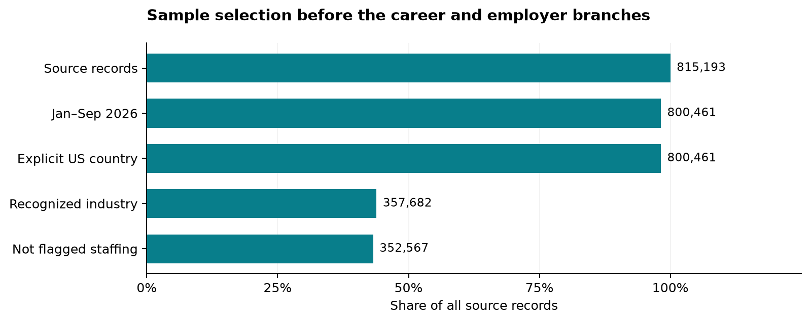
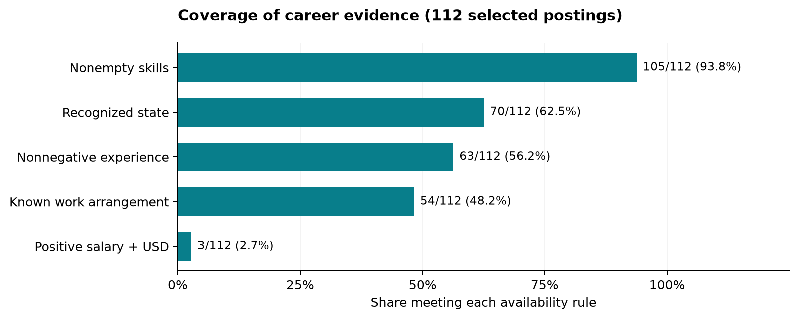
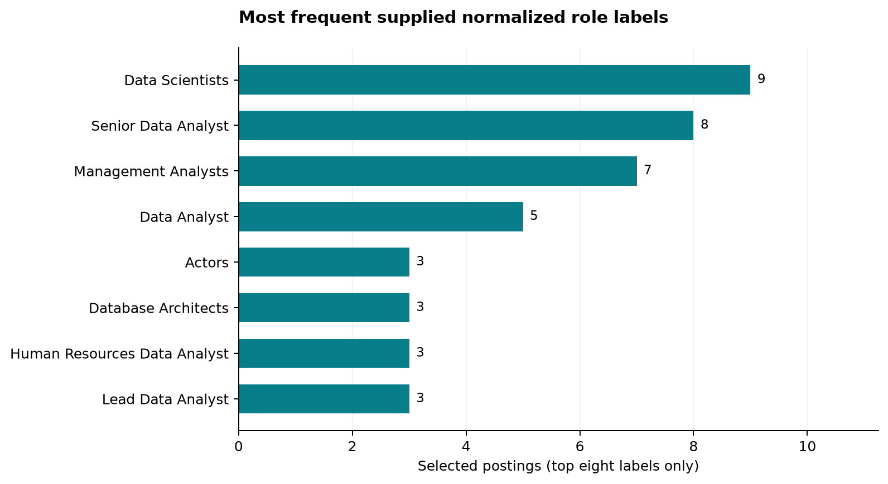
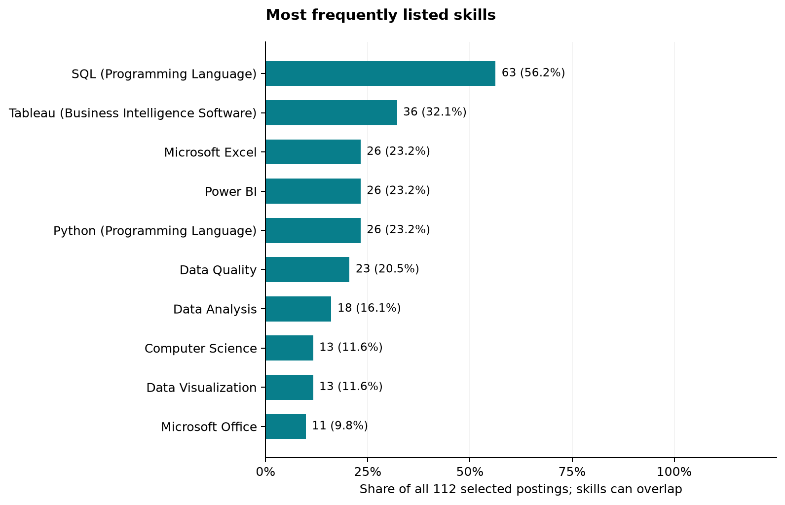
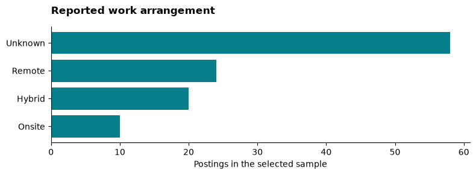
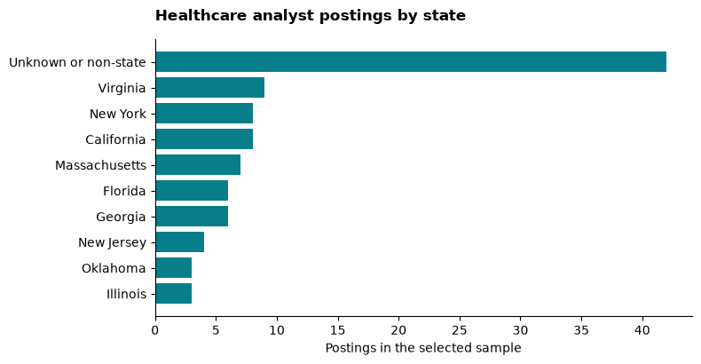

Market baseline and exploratory analysis
Explore the interactive charts, US map and searchable data tables.
1 Executed sample: code and partial output
This walkthrough uses sample=true on the local Jobs_2026_US partitions. With sampling enabled, SHA-256 of seed 2017 and posting ID selects approximately 10% of IDs across all partitions; missing IDs are excluded and duplicates keep their first occurrence. This scans every partition but retains only selected rows. These descriptive sample results are separate from the full-study tables below. Code is shown expanded; outputs are captured from that exact code by scripts/publish_sample.py. Only aggregates and a schema preview are published. Run chunks in page order: preparation, market, skills, evaluation.
1.1 Inspect coverage and work arrangements
from run_study import STATE_MAP
import numpy as np
states = career.STATE_NAME.map(lambda value: STATE_MAP.get(clean(value).upper(), 'Unknown'))
remote = career.REMOTE_TYPE_NAME.map(lambda value: {
'remote': 'Remote', 'hybrid': 'Hybrid', 'onsite': 'Onsite', 'on-site': 'Onsite'
}.get(clean(value).lower(), 'Unknown'))
salary = pd.to_numeric(career.NORMALIZED_SALARY, errors='coerce')
salary = salary.where(career.TEXT_PAY_CURRENCY.eq('USD') & salary.gt(0) & np.isfinite(salary))
experience = pd.to_numeric(career.MIN_YEARS_EXPERIENCE, errors='coerce')
coverage = pd.Series({'cohort postings': len(career), 'recognized state': states.ne('Unknown').sum(),
'known work arrangement': remote.ne('Unknown').sum(), 'positive USD salary': salary.notna().sum(),
'nonnegative experience': experience.ge(0).sum()}, name='Postings')
print(coverage.to_string())
print('Work arrangement counts:')
print(remote.value_counts().to_string())
print('State counts (first 5):')
print(states.value_counts().head(5).to_string())Partial output (computed from this run):
cohort postings 7
recognized state 5
known work arrangement 2
positive USD salary 0
nonnegative experience 6
Work arrangement counts:
REMOTE_TYPE_NAME
Unknown 5
Remote 1
Hybrid 1
State counts (first 5):
STATE_NAME
Unknown 2
North Carolina 1
Florida 1
Ohio 1
Texas 12 Exploratory data analysis
This descriptive analysis uses the saved Jobs_2026_US aggregates (Jobs_2026_US 2026). It examines selection, available career evidence, normalized role labels and skills before interpreting the predictive results. All career percentages use the 112 selected postings unless another denominator is stated. Figures describe recorded advertisements, not live vacancies or population employment.
2.1 Selection and units of analysis

The common filters retain 352,567 of 815,193 records (43.2%). The explicit-US filter removes 0 dated records; unknown country and non-US country are combined in the saved exclusion count. These exclusions describe selection, not proof that every excluded record is erroneous. The pipeline then branches: industry-and-title matching yields 112 career postings, while employer aggregation and eligibility rules yield 362 employers for classification. Those are different units and should not appear as consecutive steps in a single funnel.
2.2 Field coverage and missing evidence

| Evidence rule | Observed | Unavailable under rule | Coverage |
|---|---|---|---|
| Nonempty skills | 105 | 7 | 93.8% |
| Recognized state | 70 | 42 | 62.5% |
| Nonnegative experience | 63 | 49 | 56.2% |
| Known work arrangement | 54 | 58 | 48.2% |
| Positive salary + USD | 3 | 109 | 2.7% |
Availability is field-specific: unavailable can mean missing, unrecognized or excluded by a validity rule. The fields can be missing in the same posting; these counts cannot be added to estimate incomplete records. Salary coverage supports withholding a distribution plot or salary ranking. Recorded experience values require review against requirement text, even when nonnegative.
2.3 Role-label consistency

The saved table contains 67 distinct labels. The eight shown account for 41 of 112 postings; the other 59 labels account for 71. The career filter matches raw titles, with clean titles as fallback, whereas this chart uses supplied normalized titles. Labels such as Actors therefore signal records to inspect for disagreement; they do not establish that acting is a healthcare analytics pathway. Counts alone cannot determine whether the raw title, normalization or industry assignment is wrong. No records were relabeled or removed based on this plot.
2.4 Skill frequencies and denominators

SQL appears in 63 postings: 56.2% of all 112, or 60.0% of the 105 with nonempty skill lists. Keeping the 7 postings without skill lists in the primary denominator makes the coverage boundary visible. A missing list does not imply that a role requires no skills. These are marginal frequencies; no skill co-occurrence, correlations or causal training effects can be recovered from these aggregate tables.
2.5 Interpretation and reproducibility
The sample provides stronger descriptive support for skill priorities than for compensation advice. Work-arrangement and state summaries below retain their unknown categories. Temporal trends, salary-by-location comparisons and multivariable EDA require additional row-level summaries; the saved aggregates cannot establish those relationships.
Run python scripts/publish_eda.py to regenerate these figures and tables from run.json and market_skills.csv, without refitting models. Download selection counts, coverage, role labels and skill shares. Input hashes are recorded in the EDA manifest.
3 Work arrangements and geographic context
The selected career sample contains 112 postings dated 2026-01-15 through 2026-09-28. The scope is US healthcare data analysts in NAICS 62. Title matching includes data analyst, data analytics analyst, business intelligence analyst, BI analyst, clinical analyst and healthcare analyst phrases. Matching uses raw title, with clean title as fallback. This includes some clinical systems roles and can miss analyst titles phrased differently.
The benchmark uses the posting’s supplied industry label. It does not filter on a model prediction. These are observed dataset counts, not estimates of all open jobs or currently live vacancies. Expiration and active-URL status were not used to define the cohort.
| Measure | Observed result | Interpretation |
|---|---|---|
| Hiring volume | 112 | Unique posting IDs; cross-ID reposts may remain |
| Salary with explicit USD and positive normalized amount | 3 / 112 | Too few for a headline salary estimate |
| Minimum experience field available | 63 / 112 | Supplied values; zero may encode unspecified experience |
| Recorded minimum of 0–2 years | 44 | Not a verified count of entry-level jobs |
| At least one listed skill | 105 / 112 | Empty skill lists remain in the denominator |
Source: local snapshot (Jobs_2026_US 2026), analyzed by this project’s scripts; these observed counts are not findings of the 2017 paper.
4 Work arrangement
| Arrangement | Postings | Share of selected sample |
|---|---|---|
| Unknown | 58 | 51.8% |
| Remote | 24 | 21.4% |
| Hybrid | 20 | 17.9% |
| Onsite | 10 | 8.9% |

Unknown work arrangement is not onsite. The remote share is a lower bound on explicitly documented remote postings in this dataset, not a population estimate.
5 Geography

Abbreviations and full state names were merged. Country-level strings such as USA and United States were placed in the unknown-or-non-state category. Counts use the supplied single state field; they do not resolve all multi-location postings. Missing geography limits comparisons.
6 Salary and experience limits
Only 3 observations have both explicit USD currency and a positive normalized salary amount. The website withholds a headline median because this is below an analyst-selected minimum of 10 comparable observations. Missing currency is not assumed to be USD. Normalization factors and extracted salary evidence were not independently reviewed, so even the retained values require validation before salary advice.
The median supplied minimum-experience value is 0, but zero values cannot establish that employers accept beginners. Review original requirement text before making accessibility recommendations. Raw job descriptions are intentionally not republished by this website.
Download the benchmark table, state counts, and work-arrangement counts. Reproduce them with the script and input hashes listed on the study page.